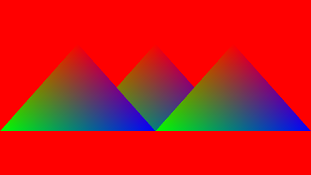

Ch7-4 初识Push Constant
本节的main.cpp对应示例代码中的：Ch7-4.hpp
Push constant是在着色器中使用可由CPU侧变更的常量的最简单方式。
这一节尝试使用push constant来为三角形指定位移，并用实例化来绘制多个在不同位置的三角形。
使用Push Constant绘制多个三角形的流程
在之前Ch7-1.hpp用顶点缓冲区绘制三角形代码的基础上，使用顶点和push constant绘制三角形需要经历以下步骤：
1.书写push constant所需数据
2.创建管线布局
3.书写着色器
4.在命令缓冲区中更新push constant并绘制
书写Push Constant所需数据
跟上一节一样，在主函数里添加每个三角形的位移数据，不过这次不建立顶点缓冲区：
glm::vec2 pushConstants[] = {
{ .0f, .0f },
{ -.5f, .0f },
{ .5f, .0f },
};
参见块成员的内存布局，push constant在着色器中默认为std430布局，那么以上数组中vec2类型的对齐为8，同C++代码中一致，不需要在以上C++代码中填补额外的空数据。
创建新的管线布局
创建管线布局时，定义一个VkPushConstantRange：
void CreateLayout() { VkPushConstantRange pushConstantRange = { VK_SHADER_STAGE_VERTEX_BIT, 0,//offset 24//范围大小，3个vec2是24 }; VkPipelineLayoutCreateInfo pipelineLayoutCreateInfo = { .pushConstantRangeCount = 1, .pPushConstantRanges = &pushConstantRange }; pipelineLayout_triangle.Create(pipelineLayoutCreateInfo); }
PushConstant.vert.shader
新建PushConstant.vert.shader，基于InstancedRendering.vert.shader略作修改即可：
#version 460 #pragma shader_stage(vertex) layout(push_constant) uniform pushConstants { vec2 u_Positions[3]; }; layout(location = 0) in vec2 i_Position; layout(location = 1) in vec4 i_Color; layout(location = 0) out vec4 o_Color; void main() { gl_Position = vec4(i_Position + u_Positions[gl_InstanceIndex], 0, 1); o_Color = i_Color; }
-
涉及到的语法：Push Constant的声明方式。
-
实例索引gl_InstanceIndex是顶点着色器的内置输入。
别忘了更改CreatePipeline(...)：
void CreatePipeline() { static shaderModule vert("shader/PushConstant.vert.spv"); //省略后续代码 }
在命令缓冲区中更新Push Constant
用vkCmdPushConstants(...)更新push constant：
void VKAPI_CALL vkCmdPushConstants(...) 的参数说明 |
|
|---|---|
VkCommandBuffer commandBuffer |
命令缓冲区的handle |
VkPipelineLayout layout |
管线布局的handle |
VkShaderStageFlags stageFlags |
涉及到的可编程管线阶段，必须注明涉及到的所有阶段 |
uint32_t offset |
要更新的范围距离整个push constant范围的起始位置，单位是字节，必须是4的倍数 |
int32_n size |
要更新的范围的大小，单位是字节，必须是4的倍数 |
const void* pValues |
指向用于更新push constant的数据 |
-
如果各个VkPushConstantRange有所重叠，更新重叠的部分时必须在stageFlags注明涉及到的所有阶段。
个人实践发现，有阶段没注明的时候，验证层未必报错。而验证层是否报错跟渲染是否正确也没必然关系！英特尔的驱动对push constant的支持存在问题，TODO Ch8-1中有个例子。
在vkCmdDraw(...)前加入以下代码：
vkCmdPushConstants(commandBuffer, pipelineLayout_triangle, VK_SHADER_STAGE_VERTEX_BIT, 0, sizeof pushConstants, &pushConstants);
绘制命令则做如下修改，绘制3个实例：
vkCmdDraw(commandBuffer, 3, 3, 0, 0);
运行程序，你应该会看到以下图像（跟上一节的一样）：
